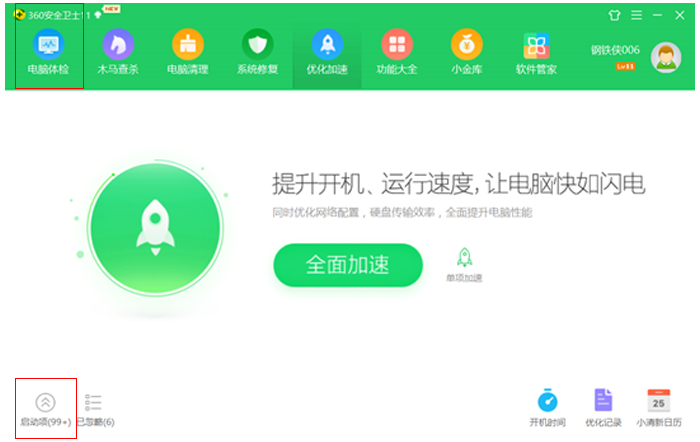
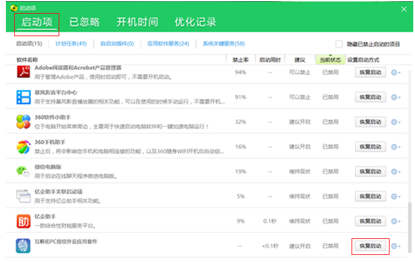
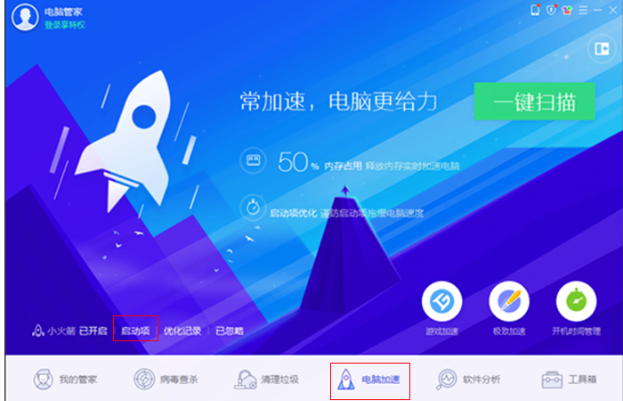
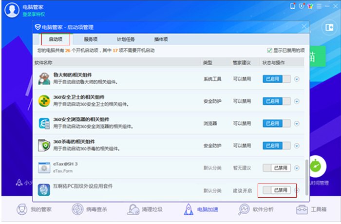
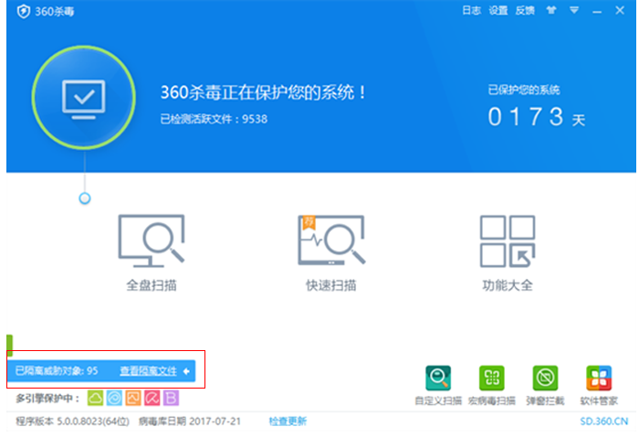
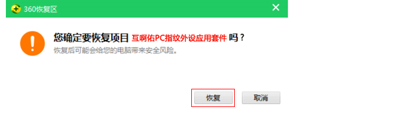

所有带指纹传感器的PC外设产品都可以使用互啊佑（Who
Are You）提供的指纹功能或“PC
指纹外设应用套件”吗？
指纹外设应用套件”吗？
不能，只有互啊佑（Who
Are You）的合作品牌推出的、并由互啊佑（Who Are
You）提供指纹技术支持的PC外设产品才能使用相应的功能和服务，在这类PC指纹外设产品上都会标有互啊佑（Who Are
You）的品牌标识及相应的文字提示，例如以下标识： 
互啊佑（Who Are
You）提供指纹技术支持的PC指纹外设产品可以在Windows系统的哪些版
本上使用？
本上使用？
鼠标、键盘等非指纹的常规基本功能可以在windows系统的所有版本上使用；涉及到的指纹功能能够在win7、win8、win8.1、win10，32bit和64bit的所有主流操作系统上使用。Windows系统后续如有其他新版本发布，互啊佑（Who
Are You）也会在第一时间支持，。
互啊佑（Who Are
You）提供指纹技术支持的PC指纹外设产品的指纹功能是即插即用的吗？
当指纹外设产品和电脑连接后，所有非指纹的常规基本功能可以即时使用，如要使用指纹功能，需先登录互啊佑（Who
Are
You）官网（www.whoareyou.live），在【产品】-【配套软件及服务】页面中下载【互啊佑PC指纹外设应用套件】，安装、注册并完成相应设置，即可使用指纹功能了
一个PC指纹外设产品只能一个人使用还是可以多人使用？
功能上支持多人使用，但考虑到指纹功能可能涉及私密性和安全性，为了更好地保护每一位用户的隐私及使用安全，建议只作为个人私有设备使用并保管。
使用【指纹加解密】功能对文件进行了指纹加密处理后，是否必须使用加密操作时的同一枚指纹
才能完成解密？
才能完成解密？
不需要，只要是同一个互啊佑（Who Are You）帐户下已注册的指纹，均可对指纹加密文件完成解密操作。
“互啊佑PC指纹外设应用套件”安装并设置完成后是否可以关闭/退出或卸载？
只有当“互啊佑PC指纹外设应用套件”处于开启及运行状态下（并已登录帐户）才能正常使用PC外设产品的指纹功能，因此请勿关闭或退出本软件。为确保用户每次开机即可拥有最佳使用体验，“互啊佑PC指纹外设应用套件”默认为开机自启动，请确保安全卫士等电脑管理/杀毒软件未阻止本软件的自启功能；也请不要随意卸载本软件，用户可以将软件最小化至系统托盘上，这不会对电脑操作造成任何影响。
当使用“互啊佑PC指纹外设应用套件”在进行操作设置时，如360等电脑管理软件弹出系统被修
改的警告意味着什么？
改的警告意味着什么？
这仅仅只是360等电脑管理软件因系统设置发生变化后弹出的常规提示，在使用“互啊佑PC指纹外设应用套件”进行指纹功能设置时不会对用户的电脑及系统造成任何风险，请直接忽略即可。
指纹信息存储在何处？是否存在泄漏或被窃取的安全隐患？
用户的指纹信息经过加密处理后存储在互啊佑（Who Are You）PC指纹外设产品的安全芯片中，通过对指令进行加密及MAC处理，可有效防止暴力枚举指令而损坏芯片；安全芯片内部具备合理的权限控制，无相应权限无法读取指纹数据，故私钥数据及指纹只能在芯片内部使用，无法窃取也不会泄露，请完全放心。
PC指纹外设产品损坏、遗失或更换之后怎么办？
如PC指纹外设产品损坏或遗失，只需重新购买由互啊佑提供指纹技术支持的PC外设产品，用户便可继续使用互啊佑（Who
Are You）提供的指纹功能及服务，但在使用前需重新完成指纹注册及相关设置。
【互啊佑PC指纹外设应用套件】 被杀毒或安全类软件拦截了，怎么恢复开机启动？
通过以下步骤操作可以恢复开机启动，以常用的360安全卫士和腾讯电脑管家为例：
360安全卫士：
第一步：打开360安全卫士，点击界面上方的 【优化加速】按钮后，再点击左下角的
【启动项】；

第二步、在弹出窗口的 【启动项】一栏中找到被禁用的 【互啊佑PC指纹外设应用套件】，点击最右边的 【恢复启动】按钮，即可恢复开机启动。

腾讯电脑管家：
第一步：打开腾讯电脑管家，点击窗口下方的 【电脑加速】按钮后，再点击左下角的
【启动项】；

第二步、在弹出窗口的 【启动项】一栏中找到被禁用的 【互啊佑PC指纹外设应用套件】，点击最右边的 【已禁用】按钮，使其变成 【已启用】状态，即可恢复开机启动。

如您使用的是其他的电脑管理软件而无法恢复 【互啊佑PC指纹外设应用套件】的开机启动，
请您致电我们获取帮助，
服务热线：400-960-7980，
工作时间：每日9:00-18:00。
请您致电我们获取帮助，
服务热线：400-960-7980，
工作时间：每日9:00-18:00。
【互啊佑PC指纹外设应用套件】 被杀毒或安全软件屏蔽、拦截或隔离了，怎么恢复使用？
通过以下步骤操作可以恢复使用，以常用的360杀毒为例：

第一步：打开360杀毒软件，点击左下角的 【查看隔离文件】
按钮；

第二步：在弹出窗口中找到被隔离的 【互啊佑PC指纹外设应用套件】
，点击右边的 【恢复】 按钮；
第三步：在弹出窗口上点击 【恢复】
按钮，即可将 【互啊佑PC指纹外设应用套件】
恢复成正常使用状态。

如您使用的是其他的杀毒软件无法找到恢复 【互啊佑PC指纹外设应用套件】的方法，
请您致电我们获取帮助，
服务热线：400-960-7980，
工作时间：每日9:00-18:00。
请您致电我们获取帮助，
服务热线：400-960-7980，
工作时间：每日9:00-18:00。